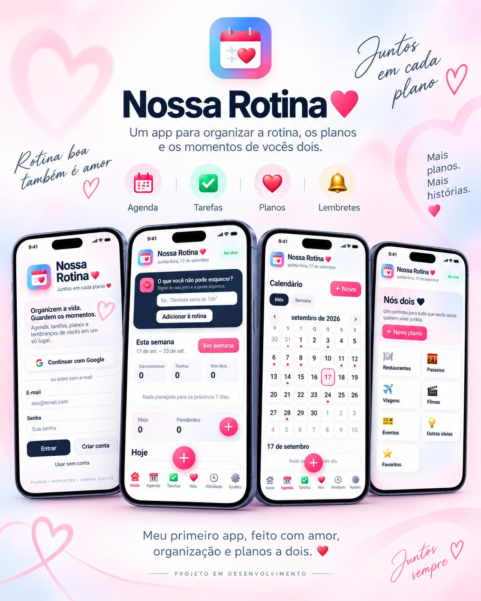
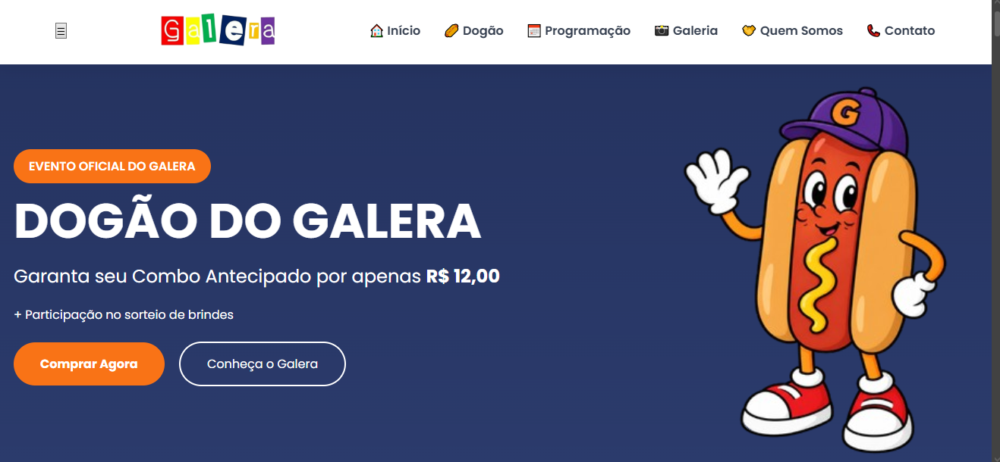
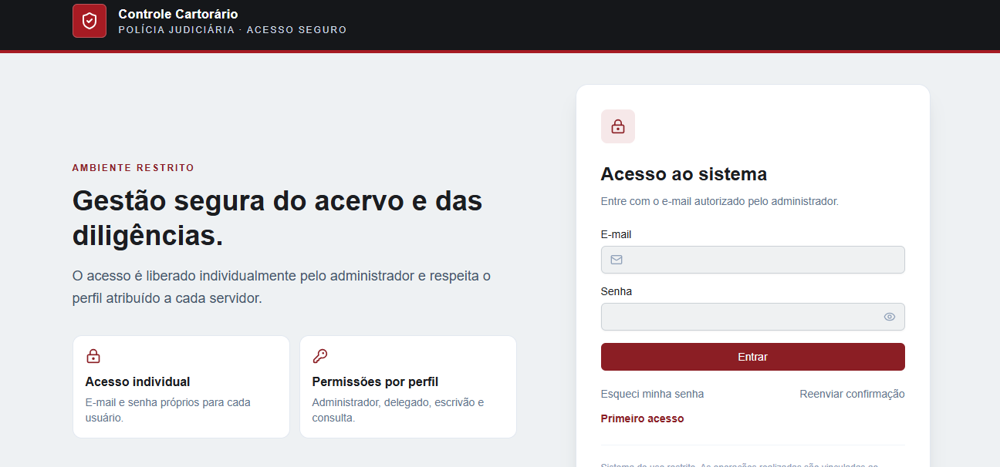
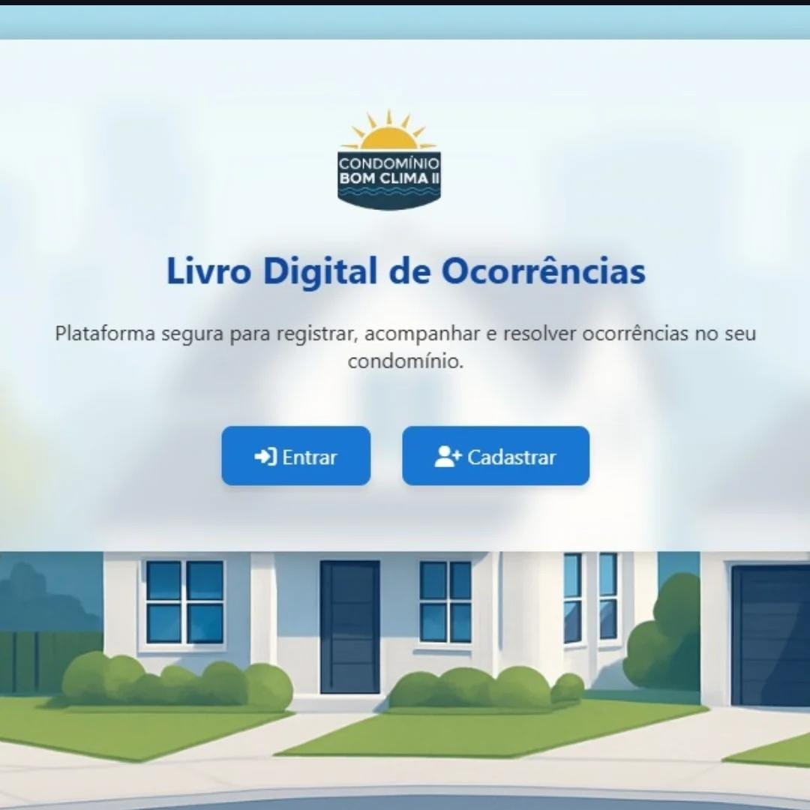
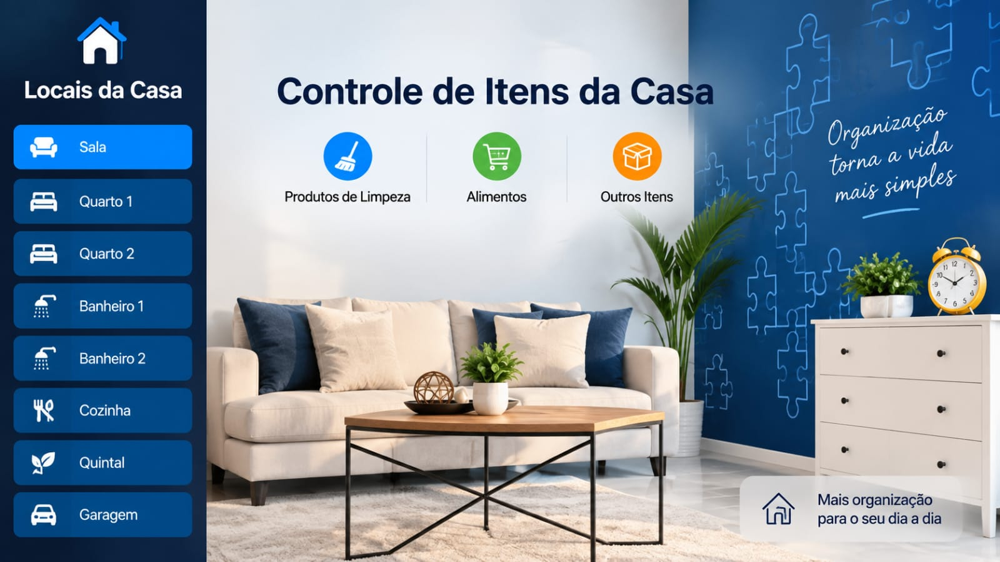
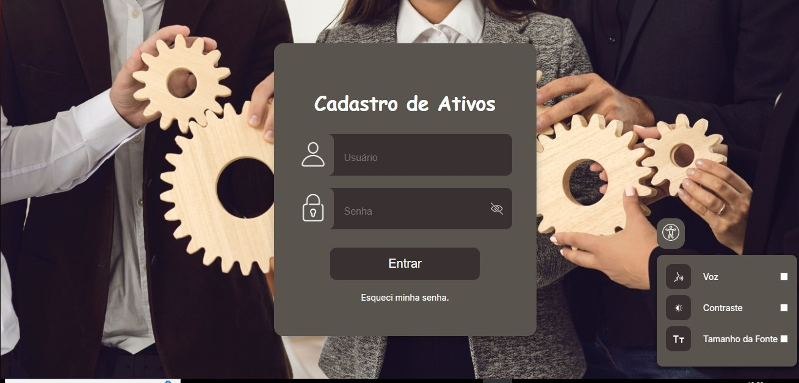

Sites & Landing Pages
Sites modernos, responsivos e focados em credibilidade, apresentação e conversão.
Desenvolvedor Web & Sistemas
Crio sites, sistemas, apps, automações e estruturas de tracking para transformar necessidades reais em soluções digitais funcionais, organizadas e prontas para evoluir.
Sou Nathan Santos, desenvolvedor com atuação em projetos web, sistemas, aplicações e implementação técnica de mensuração digital. Gosto de transformar processos e ideias em soluções claras, funcionais e fáceis de usar.
Meu trabalho combina desenvolvimento, organização de dados, integração entre serviços, experiência do usuário e visão prática de negócio.
Projetos sob medida para profissionais, empresas e operações que precisam ganhar organização, presença digital ou eficiência.
Sites modernos, responsivos e focados em credibilidade, apresentação e conversão.
Sistemas personalizados para cadastro, consulta, gestão de informações e rotinas operacionais.
Aplicações instaláveis e responsivas para organização, produtividade e experiências digitais.
Integrações e fluxos para reduzir tarefas manuais e conectar ferramentas e processos.
Google Tag Manager, GA4, eventos, formulários, WhatsApp e conversões do Google Ads.
Projetos que mostram minha evolução de páginas e estudos para soluções completas de uso real.

APP / PWAAplicativo desenvolvido para organizar compromissos, tarefas, lembretes e planos a dois em um único lugar.
Centralização da rotina e dos planos do casal, evitando o uso de várias ferramentas diferentes.

SISTEMA DE VENDASSistema web desenvolvido para digitalizar o processo de pedidos e vendas durante os eventos do Galera.
Redução do controle manual durante o evento, organizando o fluxo desde o pedido até a retirada.

SISTEMA WEBSistema web desenvolvido para centralizar o cadastro, acompanhamento e consulta de inquéritos e procedimentos.
Substituição de controles dispersos por uma plataforma organizada, segura e acessível por usuários autorizados.
Site institucional desenvolvido para uma consultoria estratégica, com foco em credibilidade, posicionamento e conversão.
Código não divulgado por confidencialidade do cliente.


Sistema para organizar itens e categorias domésticas, com telas de cadastro, visualização e controle.
Uma visão rápida do problema, da solução e do valor entregue em cada projeto.
Reunir compromissos, tarefas, lembretes e planos sem depender de várias ferramentas separadas.
Aplicação PWA responsiva com agenda, calendário, tarefas, notificações e espaço compartilhado.
Supabase, Google Calendar, notificações, experiência mobile e instalação como app.
Organizar registros e consultas de forma estruturada, com diferentes usuários e necessidade de acesso controlado.
Sistema web com autenticação, cadastro, consultas, dashboard e estrutura de banco de dados.
Perfis de acesso, Supabase Auth, consultas e organização de informações em um único ambiente.
Facilitar pedidos e reduzir a dependência de controles manuais durante momentos de maior movimento.
Sistema web com catálogo, pedido, pagamento via PIX, confirmação e apoio ao controle de retirada.
Experiência mobile, operação simples, organização de produtos e visão do fluxo de vendas.
Conte o que você precisa. Eu posso ajudar a planejar, desenvolver e evoluir o projeto.
Falar comigo
Projeto de prática de lógica e interface desenvolvido durante meus estudos.
Repositórios, exercícios, provas de conceito e outros projetos de desenvolvimento.
Veja minhas experiências, habilidades e formação em mais detalhes.
Baixar CurrículoEstou disponível para freelas, projetos, parcerias e oportunidades na área de tecnologia.